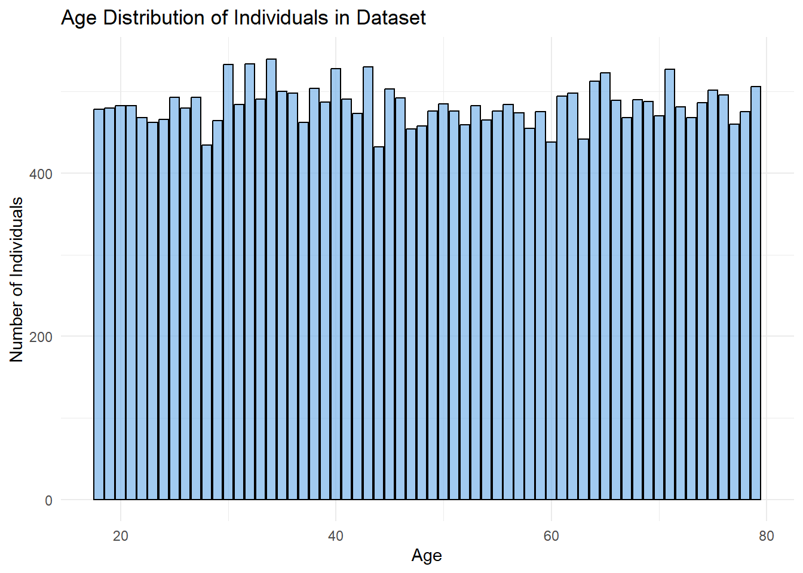

This analysis explores heart attack incidents in Japan, focusing on the differences in risk factors between youth and adult age groups. With the growing global prevalence of heart disease, understanding how age influences heart attack likelihood and identifying the strongest predictors are crucial for shaping targeted prevention strategies and healthcare interventions.
The dataset from Kaggle - Heart Attack in Japan Youth Vs Adult provides an opportunity to analyze these aspects, helping healthcare providers, policymakers, and researchers develop age-specific awareness campaigns, preventive measures, and resource allocation strategies tailored to reducing heart attack risks in Japan.
gganimate: Adds animation capabilities to ggplot2 graphics
FunnelPlotrR:Used to create funnel plots for visualizing and comparing proportions, rates, or ratios across different groups while accounting for statistical variation.
performance: Provides tools for assessing and comparing statistical models, including metrics for model quality, diagnostics, and visualization.
stats: Provides essential statistical functions for modeling, hypothesis testing, regression, and probability distributions.
parameters: Provides tools for processing, reporting, and visualizing model parameters in a tidy and user-friendly format.
ggstatsplot: Creates visualizations with statistical details embedded, combining ggplot2 with statistical tests for easy interpretation.
patchwork: Allows easy combination and arrangement of multiple ggplot2 plots into a single cohesive layout.
The code chunk below imports the Heart Attack in Japan: Youth vs. Adult dataset, downloaded from Kaggle, using the read_csv() function from the readr package.
# A tibble: 30,000 × 32
Age Gender Region Smoking_History Diabetes_History Hypertension_History
<dbl> <chr> <chr> <chr> <chr> <chr>
1 56 Male Urban Yes No No
2 69 Male Urban No No No
3 46 Male Rural Yes No No
4 32 Female Urban No No No
5 60 Female Rural No No No
6 25 Female Rural No No No
7 78 Male Urban No Yes Yes
8 38 Female Urban Yes No No
9 56 Male Rural No No Yes
10 75 Male Urban No No No
# ℹ 29,990 more rows
# ℹ 26 more variables: Cholesterol_Level <dbl>, Physical_Activity <chr>,
# Diet_Quality <chr>, Alcohol_Consumption <chr>, Stress_Levels <dbl>,
# BMI <dbl>, Heart_Rate <dbl>, Systolic_BP <dbl>, Diastolic_BP <dbl>,
# Family_History <chr>, Heart_Attack_Occurrence <chr>, Extra_Column_1 <dbl>,
# Extra_Column_2 <dbl>, Extra_Column_3 <dbl>, Extra_Column_4 <dbl>,
# Extra_Column_5 <dbl>, Extra_Column_6 <dbl>, Extra_Column_7 <dbl>, …
The dataset is structured as a tibble dataframe, containing 30,000 rows and 32 columns. Each observation represents an individual case, and the variables capture key medical and demographic information relevant to heart attack incidents across different age groups in Japan.
3.2 Checking the data structure
We will check the dataset using below
glimpse(): provides a transposed overview of a dataset, showing variables and their types in a concise format.
head(): displays the first few rows of a dataset (default is 6 rows) to give a quick preview of the data.
summary(): generates a statistical summary of each variable, including measures like mean, median, and range for numeric data.
duplicated():returns a logical vector indicating which elements or rows in a vector or data frame are duplicates.
colSums(is.na()): counts the number of missing values (NA) in each column of the data frame.
# A tibble: 6 × 32
Age Gender Region Smoking_History Diabetes_History Hypertension_History
<dbl> <chr> <chr> <chr> <chr> <chr>
1 56 Male Urban Yes No No
2 69 Male Urban No No No
3 46 Male Rural Yes No No
4 32 Female Urban No No No
5 60 Female Rural No No No
6 25 Female Rural No No No
# ℹ 26 more variables: Cholesterol_Level <dbl>, Physical_Activity <chr>,
# Diet_Quality <chr>, Alcohol_Consumption <chr>, Stress_Levels <dbl>,
# BMI <dbl>, Heart_Rate <dbl>, Systolic_BP <dbl>, Diastolic_BP <dbl>,
# Family_History <chr>, Heart_Attack_Occurrence <chr>, Extra_Column_1 <dbl>,
# Extra_Column_2 <dbl>, Extra_Column_3 <dbl>, Extra_Column_4 <dbl>,
# Extra_Column_5 <dbl>, Extra_Column_6 <dbl>, Extra_Column_7 <dbl>,
# Extra_Column_8 <dbl>, Extra_Column_9 <dbl>, Extra_Column_10 <dbl>, …
Code
summary(heart_attack)
Age Gender Region Smoking_History
Min. :18.00 Length:30000 Length:30000 Length:30000
1st Qu.:33.00 Class :character Class :character Class :character
Median :48.00 Mode :character Mode :character Mode :character
Mean :48.49
3rd Qu.:64.00
Max. :79.00
Diabetes_History Hypertension_History Cholesterol_Level Physical_Activity
Length:30000 Length:30000 Min. : 80.02 Length:30000
Class :character Class :character 1st Qu.:179.55 Class :character
Mode :character Mode :character Median :199.77 Mode :character
Mean :199.90
3rd Qu.:220.16
Max. :336.86
Diet_Quality Alcohol_Consumption Stress_Levels BMI
Length:30000 Length:30000 Min. : 0.000 Min. : 5.58
Class :character Class :character 1st Qu.: 3.644 1st Qu.:21.63
Mode :character Mode :character Median : 4.993 Median :24.96
Mean : 5.002 Mean :25.00
3rd Qu.: 6.353 3rd Qu.:28.36
Max. :10.000 Max. :46.10
Heart_Rate Systolic_BP Diastolic_BP Family_History
Min. : 30.03 Min. : 56.23 Min. : 39.95 Length:30000
1st Qu.: 63.25 1st Qu.:109.79 1st Qu.: 73.26 Class :character
Median : 69.95 Median :119.90 Median : 80.12 Mode :character
Mean : 69.98 Mean :119.91 Mean : 80.03
3rd Qu.: 76.66 3rd Qu.:130.02 3rd Qu.: 86.76
Max. :108.78 Max. :178.77 Max. :117.67
Heart_Attack_Occurrence Extra_Column_1 Extra_Column_2
Length:30000 Min. :0.0000071 Min. :0.0000052
Class :character 1st Qu.:0.2533084 1st Qu.:0.2473606
Mode :character Median :0.5008204 Median :0.4961980
Mean :0.5019388 Mean :0.4978940
3rd Qu.:0.7505286 3rd Qu.:0.7473954
Max. :0.9999654 Max. :0.9999894
Extra_Column_3 Extra_Column_4 Extra_Column_5
Min. :0.0000227 Min. :0.0000934 Min. :0.0001051
1st Qu.:0.2483093 1st Qu.:0.2522110 1st Qu.:0.2518029
Median :0.4976104 Median :0.4976175 Median :0.5019871
Mean :0.4981949 Mean :0.5005952 Mean :0.5014100
3rd Qu.:0.7476807 3rd Qu.:0.7505662 3rd Qu.:0.7536569
Max. :0.9999694 Max. :0.9999869 Max. :0.9999949
Extra_Column_6 Extra_Column_7 Extra_Column_8
Min. :0.0000531 Min. :0.0000678 Min. :0.0000449
1st Qu.:0.2559989 1st Qu.:0.2482839 1st Qu.:0.2509790
Median :0.5017726 Median :0.4988157 Median :0.4985698
Mean :0.5027631 Mean :0.4980753 Mean :0.5003557
3rd Qu.:0.7511886 3rd Qu.:0.7456378 3rd Qu.:0.7507293
Max. :0.9998892 Max. :0.9999900 Max. :0.9999300
Extra_Column_9 Extra_Column_10 Extra_Column_11
Min. :0.0000305 Min. :0.0000133 Min. :0.0000008
1st Qu.:0.2502452 1st Qu.:0.2484256 1st Qu.:0.2538092
Median :0.4984491 Median :0.5031040 Median :0.5067589
Mean :0.5002292 Mean :0.5010694 Mean :0.5044949
3rd Qu.:0.7512186 3rd Qu.:0.7522686 3rd Qu.:0.7556257
Max. :0.9999852 Max. :0.9999928 Max. :0.9999578
Extra_Column_12 Extra_Column_13 Extra_Column_14
Min. :0.0000713 Min. :0.0000204 Min. :0.0000025
1st Qu.:0.2505341 1st Qu.:0.2473108 1st Qu.:0.2482152
Median :0.5038609 Median :0.5041162 Median :0.4943841
Mean :0.5008624 Mean :0.5004557 Mean :0.4976507
3rd Qu.:0.7511780 3rd Qu.:0.7497094 3rd Qu.:0.7456212
Max. :0.9999484 Max. :0.9999451 Max. :0.9999779
Extra_Column_15
Min. :0.0000241
1st Qu.:0.2482573
Median :0.5009406
Mean :0.4999634
3rd Qu.:0.7487379
Max. :0.9999913
Ensure that all variables are correctly classified by data type; recast variable types if needed.
Variables are correctly classified - where categorical variables are classified as character, while continuous variables are classified as double.
The heart_attack tibble contains 32 attributes, as shown above.
The following preprocessing checks were conducted as part of data preparation:
Preprocessing Checks
Verified that the correct data types were loaded in the heart_attack dataset using glimpse() and spec()
Ensured there were no duplicate variable names using duplicated() in the dataset
Checked for missing values using colSums(is.na())
3.3 Understanding the metadata
The table below presents the metadata for the dataset, classifying each variable as either categorical or continuous based on its nature and data type.
Categorical attributes:
Variable Names
Type
Description
Gender
CHAR
Biological sex of the individual (e.g., Male, Female)
Region
CHAR
Geographic location where the individual resides (e.g., Urban, Rural)
Smoking_History
CHAR
Past or current smoking habits (e.g., Yes, No)
Diabetes_History
CHAR
History of diabetes diagnosis (Yes/No)
Hypertension_History
CHAR
History of high blood pressure diagnosis (Yes/No)
Physical_Activity
CHAR
Level of physical activity (e.g., Low, Moderate, High)
Diet_Quality
CHAR
Dietary habits and nutritional intake assessment (e.g., Poor, Average, Good)
Alcohol_Consumption
CHAR
Frequency or amount of alcohol intake (e.g., Low, Moderate, High, None)
Family_History
CHAR
Presence of heart disease in close relatives (Yes/No)
Heart_Attack_Occurrence
CHAR
Whether the individual has experienced a heart attack (Yes/No)
Continuous attributes:
Variable Names
Type
Description
Age
NUM
Age of the individual in years
Cholesterol_Level
NUM
Measured cholesterol level in the blood
Stress_Levels
NUM
Measured or self-reported stress level
BMI
NUM
Body Mass Index, calculated from height and weight
Heart_Rate
NUM
Resting heart rate in beats per minute (bpm)
Systolic_BP
NUM
Systolic blood pressure measurement (mmHg)
Diastolic_BP
NUM
Diastolic blood pressure measurement (mmHg)
Extra_Column_1
NUM
Extra_Column_2
NUM
Extra_Column_3
NUM
Extra_Column_4
NUM
Extra_Column_5
NUM
Extra_Column_6
NUM
Extra_Column_7
NUM
Extra_Column_8
NUM
Extra_Column_9
NUM
Extra_Column_10
NUM
Extra_Column_11
NUM
Extra_Column_12
NUM
Extra_Column_13
NUM
Extra_Column_14
NUM
Extra_Column_15
NUM
Note
Notice that Extra_Column_1 to Extra_Column_15 are additional numeric figures without clear definition.
They are most likely derived calculations from the variables.
3.4 Filtering for relevant variables
Of the 32 variables (columns), only 17 variables(columns) are selected for analysis
All columns are selected except for Extra_Column_1 to Extra_Column_15
The select() function in the dplyr package is used to obtain these rows, and stored as the R object, heart_attack_1.
# A tibble: 30,000 × 17
Age Gender Region Smoking_History Diabetes_History Hypertension_History
<dbl> <chr> <chr> <chr> <chr> <chr>
1 56 Male Urban Yes No No
2 69 Male Urban No No No
3 46 Male Rural Yes No No
4 32 Female Urban No No No
5 60 Female Rural No No No
6 25 Female Rural No No No
7 78 Male Urban No Yes Yes
8 38 Female Urban Yes No No
9 56 Male Rural No No Yes
10 75 Male Urban No No No
# ℹ 29,990 more rows
# ℹ 11 more variables: Cholesterol_Level <dbl>, Physical_Activity <chr>,
# Diet_Quality <chr>, Alcohol_Consumption <chr>, Stress_Levels <dbl>,
# BMI <dbl>, Heart_Rate <dbl>, Systolic_BP <dbl>, Diastolic_BP <dbl>,
# Family_History <chr>, Heart_Attack_Occurrence <chr>
The output shows a tibble dataframe with 30,000 rows and 17 columns.
3.5 Recoding and creating of new variables
3.5.1 Recoding continuous variables into categorical variables
In the following section, we will recode specific continuous variables into categorical groups for better interpretability.
While variables like Cholesterol_Level, Stress_Levels, BMI, Heart_Rate, Systolic_BP, and Diastolic_BP provide valuable insights in their continuous form, categorizing them into meaningful groups can enhance our ability to analyze trends and risk factors more effectively.
# A tibble: 30,000 × 24
Age Gender Region Smoking_History Diabetes_History Hypertension_History
<dbl> <chr> <chr> <chr> <chr> <chr>
1 56 Male Urban Yes No No
2 69 Male Urban No No No
3 46 Male Rural Yes No No
4 32 Female Urban No No No
5 60 Female Rural No No No
6 25 Female Rural No No No
7 78 Male Urban No Yes Yes
8 38 Female Urban Yes No No
9 56 Male Rural No No Yes
10 75 Male Urban No No No
# ℹ 29,990 more rows
# ℹ 18 more variables: Cholesterol_Level <dbl>, Physical_Activity <chr>,
# Diet_Quality <chr>, Alcohol_Consumption <chr>, Stress_Levels <dbl>,
# BMI <dbl>, Heart_Rate <dbl>, Systolic_BP <dbl>, Diastolic_BP <dbl>,
# Family_History <chr>, Heart_Attack_Occurrence <chr>,
# Cholesterol_Level_Category <chr>, Rounded_Stress_Levels <dbl>,
# Stress_Levels_Category <chr>, BMI_Category <chr>, …
3.5.2 Recoding age into categorical variable
While analyzing age as a continuous variable provides detailed insights, categorizing the Age variable into distinct age groups allows us to explore how age influences the likelihood of heart attack incidents.
The table below are the proposed age categories for this analysis:
Categories
Age
Youth
≤25 years
Young adults
26–40 years
Middle-aged adults
41–55 years
Older adults
56–70 years
Elderly
≥71 years
Code
heart_attack_2 <- heart_attack_1 %>%mutate(Age_Category =case_when( Age <=25~"Youth", Age >=26& Age <=40~"Young Adult", Age >=41& Age <=55~"Middle-Aged Adult", Age >=56& Age <=70~"Older Adult", Age >=71~"Elderly",TRUE~"Unknown" ) )# View the updated datasetheart_attack_2
# A tibble: 30,000 × 25
Age Gender Region Smoking_History Diabetes_History Hypertension_History
<dbl> <chr> <chr> <chr> <chr> <chr>
1 56 Male Urban Yes No No
2 69 Male Urban No No No
3 46 Male Rural Yes No No
4 32 Female Urban No No No
5 60 Female Rural No No No
6 25 Female Rural No No No
7 78 Male Urban No Yes Yes
8 38 Female Urban Yes No No
9 56 Male Rural No No Yes
10 75 Male Urban No No No
# ℹ 29,990 more rows
# ℹ 19 more variables: Cholesterol_Level <dbl>, Physical_Activity <chr>,
# Diet_Quality <chr>, Alcohol_Consumption <chr>, Stress_Levels <dbl>,
# BMI <dbl>, Heart_Rate <dbl>, Systolic_BP <dbl>, Diastolic_BP <dbl>,
# Family_History <chr>, Heart_Attack_Occurrence <chr>,
# Cholesterol_Level_Category <chr>, Rounded_Stress_Levels <dbl>,
# Stress_Levels_Category <chr>, BMI_Category <chr>, …
3.5.3 Checking the data structure after filtering and recoding of variables
We will re-check the dataset after filtering and recoding of continuous variables using below:
# A tibble: 6 × 25
Age Gender Region Smoking_History Diabetes_History Hypertension_History
<dbl> <chr> <chr> <chr> <chr> <chr>
1 56 Male Urban Yes No No
2 69 Male Urban No No No
3 46 Male Rural Yes No No
4 32 Female Urban No No No
5 60 Female Rural No No No
6 25 Female Rural No No No
# ℹ 19 more variables: Cholesterol_Level <dbl>, Physical_Activity <chr>,
# Diet_Quality <chr>, Alcohol_Consumption <chr>, Stress_Levels <dbl>,
# BMI <dbl>, Heart_Rate <dbl>, Systolic_BP <dbl>, Diastolic_BP <dbl>,
# Family_History <chr>, Heart_Attack_Occurrence <chr>,
# Cholesterol_Level_Category <chr>, Rounded_Stress_Levels <dbl>,
# Stress_Levels_Category <chr>, BMI_Category <chr>,
# Heart_Rate_Category <chr>, Systolic_BP_Category <chr>, …
Code
summary(heart_attack_2)
Age Gender Region Smoking_History
Min. :18.00 Length:30000 Length:30000 Length:30000
1st Qu.:33.00 Class :character Class :character Class :character
Median :48.00 Mode :character Mode :character Mode :character
Mean :48.49
3rd Qu.:64.00
Max. :79.00
Diabetes_History Hypertension_History Cholesterol_Level Physical_Activity
Length:30000 Length:30000 Min. : 80.02 Length:30000
Class :character Class :character 1st Qu.:179.55 Class :character
Mode :character Mode :character Median :199.77 Mode :character
Mean :199.90
3rd Qu.:220.16
Max. :336.86
Diet_Quality Alcohol_Consumption Stress_Levels BMI
Length:30000 Length:30000 Min. : 0.000 Min. : 5.58
Class :character Class :character 1st Qu.: 3.644 1st Qu.:21.63
Mode :character Mode :character Median : 4.993 Median :24.96
Mean : 5.002 Mean :25.00
3rd Qu.: 6.353 3rd Qu.:28.36
Max. :10.000 Max. :46.10
Heart_Rate Systolic_BP Diastolic_BP Family_History
Min. : 30.03 Min. : 56.23 Min. : 39.95 Length:30000
1st Qu.: 63.25 1st Qu.:109.79 1st Qu.: 73.26 Class :character
Median : 69.95 Median :119.90 Median : 80.12 Mode :character
Mean : 69.98 Mean :119.91 Mean : 80.03
3rd Qu.: 76.66 3rd Qu.:130.02 3rd Qu.: 86.76
Max. :108.78 Max. :178.77 Max. :117.67
Heart_Attack_Occurrence Cholesterol_Level_Category Rounded_Stress_Levels
Length:30000 Length:30000 Min. : 0.000
Class :character Class :character 1st Qu.: 4.000
Mode :character Mode :character Median : 5.000
Mean : 4.998
3rd Qu.: 6.000
Max. :10.000
Stress_Levels_Category BMI_Category Heart_Rate_Category
Length:30000 Length:30000 Length:30000
Class :character Class :character Class :character
Mode :character Mode :character Mode :character
Systolic_BP_Category Diastolic_BP_Category Age_Category
Length:30000 Length:30000 Length:30000
Class :character Class :character Class :character
Mode :character Mode :character Mode :character
# Count the number of individuals by exact ageage_distribution <- heart_attack_2 %>%group_by(Age) %>%summarise(Count =n()) %>%arrange(Age)# Print age countprint(age_distribution)
ggplot(age_distribution, aes(x = Age, y = Count)) +geom_bar(stat ="identity", fill ="#78B3EA", color ="black", alpha =0.7) +labs(title ="Age Distribution of Individuals in Dataset",x ="Age",y ="Number of Individuals") +theme_minimal()

Code
# Define age category levels in the required orderage_levels <-c("Youth (≤25 years)","Young adults (26–40 years)","Older adults (56–70 years)","Middle-aged adults (41–55 years)","Elderly (≥71 years)")# Count individuals by Age Category with ordered factor levelsage_category_distribution <- heart_attack_2 %>%mutate(Age_Category =case_when( Age <=25~"Youth (≤25 years)", Age >=26& Age <=40~"Young adults (26–40 years)", Age >=41& Age <=55~"Middle-aged adults (41–55 years)", Age >=56& Age <=70~"Older adults (56–70 years)", Age >=71~"Elderly (≥71 years)",TRUE~"Unknown" )) %>%group_by(Age_Category) %>%summarise(Count =n()) %>%mutate(Age_Category =factor(Age_Category, levels = age_levels)) %>%# Apply custom sortingarrange(Age_Category)# Print age category countprint(age_category_distribution)
The cut()function was used to divide a continuous variable (like Age) into discrete intervals such as bins.
cut() function is part of Base R, which does not require any additional packages to use.
Code
library(ggplot2)library(dplyr)library(tidyr)# Step 1: Remove any NA values in Age before binningheart_attack_2 <- heart_attack_2 %>%filter(!is.na(Age)) %>%# Remove missing Age valuesmutate(Age_Bin =cut(Age, breaks =seq(floor(min(Age, na.rm =TRUE)), ceiling(max(Age, na.rm =TRUE)) +5, by =5), right =FALSE)) # Step 2: Count total individuals per age bintotal_population <- heart_attack_2 %>%group_by(Age_Bin) %>%summarise(Total_Count =n(), .groups ="drop")# Step 3: Count heart attack occurrences per age binheart_attack_counts <- heart_attack_2 %>%filter(Heart_Attack_Occurrence =="Yes") %>%group_by(Age_Bin) %>%summarise(Heart_Attack_Count =n(), .groups ="drop")# Step 4: Merge the two tables and replace NA values with 0normalized_data <-left_join(total_population, heart_attack_counts, by ="Age_Bin") %>%mutate(Heart_Attack_Count =replace_na(Heart_Attack_Count, 0), # Replace NA counts with 0Normalized_Heart_Attack_Rate = (Heart_Attack_Count / Total_Count) *100) %>%filter(!is.na(Age_Bin)) # Ensure Age_Bin does not contain NA values# Step 5: Create the normalized histogramggplot(normalized_data, aes(x = Age_Bin, y = Normalized_Heart_Attack_Rate, fill = Age_Bin)) +geom_bar(stat ="identity", color ="black", alpha =0.7) +# Add text labels showing the percentage per bingeom_text(aes(label =sprintf("%.1f%%", Normalized_Heart_Attack_Rate)), vjust =-0.5, color ="black") +labs(title ="Normalized Age Distribution of Heart Attack Patients",x ="Age Groups (Binned by 5 Years)",y ="Heart Attack Rate (Normalized, % of total in group)") +theme_minimal() +theme(axis.text.x =element_text(angle =45, hjust =1))
4.2.2 Age distribution of heart attack patients across age groups - histogram
Another point of view, categorizing ages into groups and calculating the heart attack rate for each group.
Observations:
Almost similar rates across age groups :
Heart attack rates range between 8.9% and 10.3%, showing no extreme variation.
Young Adults (26–40) & Elderly (≥71) have the highest rate - at 10.3%
Youth (≤25) has the lowest rate - at 8.9%, only slightly lower than other groups.
Suggests that age alone may not be the strongest predictor of heart attack risk, and other demographic, lifestyle or health factors might play a key role.
# Define Age Category Labels with Age Rangesage_labels <-c("Youth (≤25 years)", "Young adults (26–40 years)", "Middle-aged adults (41–55 years)", "Older adults (56–70 years)", "Elderly (≥71 years)")# Count total individuals per age categorytotal_population <- heart_attack_2 %>%group_by(Age_Category) %>%summarise(Total_Count =n())# Count heart attack occurrences per age categoryheart_attack_counts <- heart_attack_2 %>%filter(Heart_Attack_Occurrence =="Yes") %>%group_by(Age_Category) %>%summarise(Heart_Attack_Count =n())# Merge both datasets and calculate the normalized heart attack ratenormalized_data <-left_join(heart_attack_counts, total_population, by ="Age_Category") %>%mutate(Normalized_Heart_Attack_Rate = (Heart_Attack_Count / Total_Count) *100) %>%# Convert Age_Category into a factor with labelsmutate(Age_Category =factor(Age_Category, levels =c("Youth", "Young Adult", "Middle-Aged Adult", "Older Adult", "Elderly"), labels = age_labels))# Create bar plot with normalized ratesggplot(normalized_data, aes(x = Age_Category, y = Normalized_Heart_Attack_Rate, fill = Age_Category)) +geom_bar(stat ="identity", color ="black", alpha =0.7) +# Add data labels to show percentagesgeom_text(aes(label =sprintf("%.1f%%", Normalized_Heart_Attack_Rate)), vjust =-0.5, color ="black",size =2.5) +labs(title ="Normalized Heart Attack Rate by Age Group",x ="Age Group",y ="Heart Attack Rate (% of total in group)",fill ="Age Categories (with Ranges)") +# Updated legend titletheme_minimal() +scale_fill_brewer(palette ="Set2") +theme(axis.text.x =element_text(angle =45, hjust =1),axis.text.y =element_text(size =8))
4.2.3 Age distribution of heart attack patients - ridgeline density plot
Observations:
Heart attacks occur across all ages
The density distribution shows that heart attacks (Yes) occur at all age ranges, from young to elderly individuals. Suggests that age alone is not a definitive factor.
Similar age distribution for both groups
The Heart Attack Occurrence = “No” group is more evenly distributed across age ranges
Overall shape of the density curves for individuals who had heart attacks and those who did not appear similar.
Need for deeper analysis to identify other contributing factors that play a more crucial role.
A funnel plot object with 5 points of which 0 are outliers.
Plot is not adjusted for overdispersion.
Code
# Step 1: Convert "Yes"/"No" to 1/0heart_attack_2 <- heart_attack_2 %>%mutate(Heart_Attack_Occurrence =ifelse(Heart_Attack_Occurrence =="Yes", 1, 0))# Step 2: Summarize data for all 5 age categoriesage_summary <- heart_attack_2 %>%group_by(Age_Category) %>%summarise(Heart_Attack_Count =sum(Heart_Attack_Occurrence, na.rm =TRUE), # NumeratorTotal_Population =n() # Denominator )# Step 3: Funnel Plot for all age categoriesfunnel_plot(.data = age_summary,numerator ="Heart_Attack_Count",denominator ="Total_Population",group ="Age_Category",data_type ="PR", # Proportion Ratex_range =c(0, max(age_summary$Total_Population) +500), y_range =c(0, max(age_summary$Heart_Attack_Count / age_summary$Total_Population) +0.02) )
4.3 EDA 2 - identify the strongest predictors contributing to heart attack incidents
From the above analysis, it suggests that age alone may not be the strongest predictor of heart attack risk, other factors might play a key role.
In the following analysis, we will examine the strongest predictors of heart attack incidents based on two key factor types: Demographic and Lifestyle/ Health.
Demographic variables are inherent characteristics that define a person but are not directly influence by behavior or lifestyle
Lifestyle/ health variables are a result from both genetics and lifestyle factors
Gender (p = 0.0758) is the closest to significance, suggesting a potential but weak association
Region (p = 0.9890) and Family History (p = 0.8531) show almost no correlation with heart attack occurrence, indicating that location and family history may not be strong predictors.
library(tidyverse)# Select demographic factorsdemographic_factors <- heart_attack_2 %>%select(Gender, Region, Family_History, Heart_Attack_Occurrence) %>%mutate(across(everything(), as.factor)) # Ensure all categorical variables are factors# Function to perform chi-square test for each demographic factorperform_chi_test <-function(var) { contingency_table <-table(demographic_factors[[var]], demographic_factors$Heart_Attack_Occurrence) test_result <-chisq.test(contingency_table)return(data.frame(Factor = var,Chi_Square = test_result$statistic,p_value = test_result$p.value ))}# Apply the chi-square test to all demographic variableschi_test_results <-map_df(c("Gender", "Region", "Family_History"), perform_chi_test)# Display chi-square test resultsprint(chi_test_results)
4.3.1.1 Visualization - half eye plot with boxplot
Drawing inference from the half-eye plot with boxplot which visualizes the distribution of age across demographic factors for heart attack cases.
Observations:
Distributions across demographics look similar
Age distributions for different demographic categories overlap significantly. There is no obvious skew or deviations which suggests a particular demographic factor influence heart attack risk
Boxplots show similar medians & spreads
Medians for each group are relatively aligned, the spread (IQR) across categories does not indicate a distinct outlier effect.
The statistical evidence (Chi-Square Test) aligns with the visual analysis (Half-Eye Plot).
library(ggplot2)library(ggdist)library(dplyr)library(tidyr)# Prepare Data: Convert demographic factors to long format & Filter for "Yes"heart_attack_long <- heart_attack_2 %>%select(Age, Gender, Region, Family_History, Heart_Attack_Occurrence) %>%filter(Heart_Attack_Occurrence =="1") %>%# 🔹 Keep only heart attack casespivot_longer(cols =c(Gender, Region, Family_History), names_to ="Demographic_Factor", values_to ="Category") %>%mutate(Age =as.numeric(Age),Heart_Attack_Occurrence =as.factor(Heart_Attack_Occurrence))# Half-Eye Plot with Boxplot Overlay (Filtered)ggplot(heart_attack_long, aes(x = Age, y =interaction(Demographic_Factor, Category), fill = Category)) +# 🔹 Change fill to Category for demographic focusstat_halfeye(adjust =0.5, justification =-0.2, .width =c(0.5, 0.8, 0.95), slab_alpha =0.8, point_colour =NA) +# Remove points from the half-eye plotgeom_boxplot(width =0.20, outlier.shape =NA, alpha =0.6) +# Add boxplot without outliersscale_fill_brewer(palette ="Set2", name ="Demographic Category") +# 🔹 Different colors for categoriestheme_minimal() +labs(title ="Half-Eye Plot with Boxplot: Age Distribution for Heart Attack Cases",x ="Age", y ="Demographic Categories")
4.3.2 How does lifestyle/ health factors play a role in contributing to heart attack incidents
4.3.2.1 Data preparation for logistic regression on heart attack risk
The below are the steps taken to prepare the dataset for logistic regression. The key lifestyle/ health factors were selected, where categorical variables were encoded, and ordinal scales variables were converted to numeric values.
Code
# Select relevant health-related columnsrelevant_factors <- heart_attack_2 %>%select("Gender", "Region", "Smoking_History", "Diabetes_History", "Hypertension_History", "Physical_Activity","Diet_Quality", "Alcohol_Consumption", "Family_History", "Cholesterol_Level_Category", "Heart_Attack_Occurrence", "Stress_Levels_Category", "BMI_Category", "Heart_Rate_Category", "Systolic_BP_Category", "Diastolic_BP_Category")# Convert categorical variables# Gender encodingrelevant_factors$Gender <-factor(relevant_factors$Gender, levels =c("Male", "Female"))# Region encodingrelevant_factors$Region <-factor(relevant_factors$Region, levels =c("Rural", "Urban"))# Smoking_History encodingrelevant_factors$Smoking_History <-factor(relevant_factors$Smoking_History, levels =c("Yes", "No"))# Diabetes_History encodingrelevant_factors$Diabetes_History <-factor(relevant_factors$Diabetes_History, levels =c("Yes", "No"))# Hypertension_History encodingrelevant_factors$Hypertension_History <-factor(relevant_factors$Hypertension_History, levels =c("Yes", "No"))# Physical_Activity is now numeric (Low = 0, Moderate = 1, High = 2)relevant_factors$Physical_Activity <-recode(relevant_factors$Physical_Activity, "Low"=0, "Moderate"=1, "High"=2) %>%as.numeric()# Diet_Quality is now numeric (Poor = 0, Average = 1, Good = 2)relevant_factors$Diet_Quality <-recode(relevant_factors$Diet_Quality, "Poor"=0, "Average"=1, "Good"=2) %>%as.numeric()# Alcohol_Consumption is now numeric (None = 0, Low = 1, Moderate = 2, High = 3)relevant_factors$Alcohol_Consumption <-recode(relevant_factors$Alcohol_Consumption, "None"=0, "Low"=1, "Moderate"=2, "High"=3) %>%as.numeric()# Family_History encodingrelevant_factors$Family_History <-factor(relevant_factors$Family_History, levels =c("Yes", "No"))# Cholesterol_Level_Category is now numeric (Low = 0, Moderate = 1, High = 2)relevant_factors$Cholesterol_Level_Category <-recode(relevant_factors$Cholesterol_Level_Category, "Low"=0, "Moderate"=1, "High"=2) %>%as.numeric()# Stress_Levels_Category is now numeric (Minimal Stress = 0, Low Stress = 1, Moderate Stress = 2, High Stress = 3)relevant_factors$Stress_Levels_Category <-recode(relevant_factors$Stress_Levels_Category,"Miniminal_Stress"=0,"Low_Stress"=1,"Moderate_Stress"=2,"High_Stress"=3) %>%as.numeric()# BMI_Category is now numeric (Underweight = 0, Normal_Weight = 1, Overweight = 2, Obese = 3)relevant_factors$BMI_Category <-recode(relevant_factors$BMI_Category, "Underweight"=0, "Normal_Weight"=1, "Overweight"=2, "Obese"=3) %>%as.numeric()# Heart_Rate_Category is now numeric (Low = 0, Normal = 1, High = 2)relevant_factors$Heart_Rate_Category <-recode(relevant_factors$Heart_Rate_Category, "Low"=0, "Normal"=1, "High"=2) %>%as.numeric()# Systolic_BP_Category is now numeric (Normal = 0, Elevated = 1, Hypertension_Stage_1 = 2, Hypertension_Stage_2 = 3)relevant_factors$Systolic_BP_Category <-recode(relevant_factors$Systolic_BP_Category, "Normal"=0, "Elevated"=1, "Hypertension_Stage_1"=2, "Hypertension_Stage_2"=3) %>%as.numeric()# Diastolic_BP_Category is now numeric (Normal = 0, Elevated = 1, Hypertension_Stage_1 = 2, Hypertension_Stage_2 = 3)relevant_factors$Diastolic_BP_Category <-recode(relevant_factors$Diastolic_BP_Category, "Normal"=0, "Elevated"=1, "Hypertension_Stage_1"=2, "Hypertension_Stage_2"=3) %>%as.numeric()# Convert Heart_Attack_Occurrence to binary and ensure it remains a factorrelevant_factors$Heart_Attack_Occurrence <-factor(ifelse(relevant_factors$Heart_Attack_Occurrence =="Yes", 1, 0), levels =c(0, 1))
4.3.2.2 Multiple regression using lm()
The code below is used to calibrate a multiple linear regression model by using glm() of Base Stats of R.
# Run Logistic Regression Modellogistic_model <-glm(Heart_Attack_Occurrence ~ ., data = relevant_factors, family =binomial())# Print Model Summarylogistic_model
4.3.2.3 Model Diagnostic: checking for multicolinearity
In the code below, we use check_collinearity() of performance package to check for multicolinearity.
Observations:
Low Multicollinearity – VIF values are all ~1.00, indicating minimal correlation among independent variables.
No Immediate Need for Variable Removal – Since there is no strong multicollinearity, all predictors can remain in the model.
# Generate correlation matrix plot ggstatsplot::ggcorrmat(data = relevant_factors, cor.vars =1:ncol(relevant_factors), ggcorrplot.args =list(outline.color ="blue", # Add black outline for clarityhc.order =TRUE, # Hierarchical clustering to group correlated variablestl.cex =10# Adjust text size for readability ),title ="Correlogram for Heart Attack Risk Factors",subtitle ="Significance level: p < 0.05")
4.3.2.5 Model Diagnostic: checking for statistical significance of predictors in logistic regression
Stress Levels Category is the only statistically significant variable (p = 0.0273).
Gender (Female) is the next most significant (p = 0.0666), although it is not below the traditional 0.05 threshold, it is marginally significant (p < 0.1).
All other variables (Hypertension, Smoking, Diabetes, etc.) have p-values > 0.1, making them far less significant.
# Fit logistic regression model with all predictors + Stress Levels interactionsfull_model <-glm(Heart_Attack_Occurrence ~ . + Stress_Levels_Category * Hypertension_History, family =binomial(), data = relevant_factors)# Check significance of all predictorssummary(full_model)library(MASS)optimized_model <-stepAIC(full_model, direction ="both")summary(optimized_model)
Ch
Source Code
---title: "Take-home Exercise 01"author: "Andrea Yeo"date-modified: "last-modified"date: "February 1, 2025"execute: echo: true eval: true warning: false freeze: true---# Heart Attack in Japan Youth Vs Adult## 1. Overview### 1.1 BackgroundThis analysis explores heart attack incidents in Japan, focusing on the differences in risk factors between youth and adult age groups. With the growing global prevalence of heart disease, understanding [*how age influences heart attack likelihood*]{.underline} and [*identifying the strongest predictors*]{.underline} are crucial for shaping targeted prevention strategies and healthcare interventions.The dataset from Kaggle - [Heart Attack in Japan Youth Vs Adult](https://www.kaggle.com/datasets/ashaychoudhary/heart-attack-in-japan-youth-vs-adult) provides an opportunity to analyze these aspects, helping healthcare providers, policymakers, and researchers develop age-specific awareness campaigns, preventive measures, and resource allocation strategies tailored to reducing heart attack risks in Japan.### 1.2 Research objectiveUsing the [Heart Attack in Japan: Youth vs. Adult](https://www.kaggle.com/datasets/ashaychoudhary/heart-attack-in-japan-youth-vs-adult) dataset, this Take-home_Ex01 applies appropriate Exploratory Data Analysis (EDA) methods, using the [tidyverse](https://www.tidyverse.org/) package and [ggplot](https://www.rdocumentation.org/packages/ggplot2/versions/0.9.0/topics/ggplot) functions to:- **explore how age influences the likelihood of heart attack incidents**- **identify the strongest predictors contributing to heart attack incidents**## 2. Getting started### 2.1 Loading the packagesThe following R packages will be loaded for this exercise using `pacman::p_load()`:- [**readr**](https://www.rdocumentation.org/packages/readr/versions/2.1.5): Part of a tidyverse package for fast and efficient reading of rectangular data (CSV, TSV, and other delimited files) into R- [**dplyr**](https://www.rdocumentation.org/packages/dplyr/versions/0.5.0): Part of a tidyverse package for efficient data manipulation, including filtering, selecting, mutating, summarizing, and grouping data in R- [**ggplot2**](https://www.rdocumentation.org/packages/ggplot2/versions/3.5.0): Part of a tidyverse package allowing for flexible and layered creation of complex plots- [**tidyverse**](https://www.rdocumentation.org/packages/tidyverse/versions/2.0.0): A collection of R packages for data manipulation, visualization, and analysis- [**knitr**](https://www.rdocumentation.org/packages/knitr/versions/1.48): Enables dynamic report generation with R Markdown- [**patchwork**](https://www.rdocumentation.org/packages/patchwork/versions/0.0.1): Combines multiple ggplot2 plots into a single layout- [**ggthemes**](https://www.rdocumentation.org/packages/ggthemes/versions/5.1.0): Provides additional themes and scales for ggplot2- [**ggridges**](https://www.rdocumentation.org/packages/ggridges/versions/0.5.6): Creates ridge plots for density visualization- [**ggpubr**](https://www.rdocumentation.org/packages/ggpubr/versions/0.6.0): Simplifies publication-ready ggplot2 visualizations- [**gganimate**](https://www.rdocumentation.org/packages/gganimate/versions/1.0.9): Adds animation capabilities to ggplot2 graphics- [**FunnelPlotrR**](https://www.rdocumentation.org/packages/rmeta/versions/3.0/topics/funnelplot):Used to create funnel plots for visualizing and comparing proportions, rates, or ratios across different groups while accounting for statistical variation.- [**performance**](https://easystats.github.io/performance/index.html): Provides tools for assessing and comparing statistical models, including metrics for model quality, diagnostics, and visualization.- [**stats**](https://www.rdocumentation.org/packages/stats/versions/3.6.2): Provides essential statistical functions for modeling, hypothesis testing, regression, and probability distributions.- [**parameters**](https://www.rdocumentation.org/packages/parameters/versions/0.22.0): Provides tools for processing, reporting, and visualizing model parameters in a tidy and user-friendly format.- [**ggstatsplot**](https://www.rdocumentation.org/packages/ggstatsplot/versions/0.6.1): Creates visualizations with statistical details embedded, combining `ggplot2` with statistical tests for easy interpretation.- [**patchwork**](https://www.rdocumentation.org/packages/patchwork/versions/0.0.1): Allows easy combination and arrangement of multiple ggplot2 plots into a single cohesive layout.```{r}pacman::p_load(tidyverse, haven, knitr, patchwork, ggthemes, scales, ggridges, ggpubr, gganimate, ggdist, ggtext, ggalt, cowplot, ggnewscale,FunnelPlotR, performance, parameters, ggstatsplot)```## 3. Data wrangling & data prepration### 3.1 Importing the dataThe code chunk below imports the [Heart Attack in Japan: Youth vs. Adult](https://www.kaggle.com/datasets/ashaychoudhary/heart-attack-in-japan-youth-vs-adult) dataset, downloaded from Kaggle, using the read_csv() function from the readr package.```{r}heart_attack <-read_csv("data/japan_heart_attack_dataset.csv", show_col_types =FALSE)heart_attack```The dataset is structured as a tibble dataframe, containing 30,000 rows and 32 columns. Each observation represents an individual case, and the variables capture key medical and demographic information relevant to heart attack incidents across different age groups in Japan.### 3.2 Checking the data structureWe will check the dataset using below- `glimpse()`: provides a transposed overview of a dataset, showing variables and their types in a concise format.- `head()`: displays the first few rows of a dataset (default is 6 rows) to give a quick preview of the data.- `summary()`: generates a statistical summary of each variable, including measures like mean, median, and range for numeric data.- `duplicated()`:returns a logical vector indicating which elements or rows in a vector or data frame are duplicates.- `colSums(is.na())`: counts the number of missing values (NA) in each column of the data frame.- `spec()`: use `spec()` to quickly inspect the column:::::: panel-tabset## glimpse()```{r}glimpse(heart_attack)```## head()```{r}head(heart_attack)```## summary()```{r}summary(heart_attack)```## duplicated()```{r}heart_attack[duplicated(heart_attack),]```::: callout-note- Ensure that there are no duplicated columns, if not will have to investigate further.:::## colSum(is.na())```{r}colSums(is.na(heart_attack))```::: callout-note- Ensure that there are no NA values, if not will have to investigate further.- Possibility to use `drop_na()` function to drop rows where any specified column contains a missing value.:::## spec())```{r}spec(heart_attack)```::: callout-note- Ensure that all variables are correctly classified by data type; recast variable types if needed.- Variables are correctly classified - where categorical variables are classified as **character**, while continuous variables are classified as **double**.:::::::::The heart_attack tibble contains 32 attributes, as shown above.The following preprocessing checks were conducted as part of data preparation:::: callout-tip## Preprocessing Checks- Verified that the correct data types were loaded in the `heart_attack` dataset using `glimpse()` and `spec()`- Ensured there were no duplicate variable names using `duplicated()` in the dataset- Checked for missing values using `colSums(is.na())`:::### 3.3 Understanding the metadataThe table below presents the metadata for the dataset, classifying each variable as either categorical or continuous based on its nature and data type.- **Categorical attributes:** +-------------------------+------------+------------------------------------------------------------------------------+ | Variable Names | Type | Description | +=========================+============+==============================================================================+ | Gender | CHAR | Biological sex of the individual (e.g., Male, Female) | +-------------------------+------------+------------------------------------------------------------------------------+ | Region | CHAR | Geographic location where the individual resides (e.g., Urban, Rural) | +-------------------------+------------+------------------------------------------------------------------------------+ | Smoking_History | CHAR | Past or current smoking habits (e.g., Yes, No) | +-------------------------+------------+------------------------------------------------------------------------------+ | Diabetes_History | CHAR | History of diabetes diagnosis (Yes/No) | +-------------------------+------------+------------------------------------------------------------------------------+ | Hypertension_History | CHAR | History of high blood pressure diagnosis (Yes/No) | +-------------------------+------------+------------------------------------------------------------------------------+ | Physical_Activity | CHAR | Level of physical activity (e.g., Low, Moderate, High) | +-------------------------+------------+------------------------------------------------------------------------------+ | Diet_Quality | CHAR | Dietary habits and nutritional intake assessment (e.g., Poor, Average, Good) | +-------------------------+------------+------------------------------------------------------------------------------+ | Alcohol_Consumption | CHAR | Frequency or amount of alcohol intake (e.g., Low, Moderate, High, None) | +-------------------------+------------+------------------------------------------------------------------------------+ | Family_History | CHAR | Presence of heart disease in close relatives (Yes/No) | +-------------------------+------------+------------------------------------------------------------------------------+ | Heart_Attack_Occurrence | CHAR | Whether the individual has experienced a heart attack (Yes/No) | +-------------------------+------------+------------------------------------------------------------------------------+- **Continuous attributes:** +-------------------+--------------+----------------------------------------------------+ | Variable Names | Type | Description | +===================+==============+====================================================+ | Age | NUM | Age of the individual in years | +-------------------+--------------+----------------------------------------------------+ | Cholesterol_Level | NUM | Measured cholesterol level in the blood | +-------------------+--------------+----------------------------------------------------+ | Stress_Levels | NUM | Measured or self-reported stress level | +-------------------+--------------+----------------------------------------------------+ | BMI | NUM | Body Mass Index, calculated from height and weight | +-------------------+--------------+----------------------------------------------------+ | Heart_Rate | NUM | Resting heart rate in beats per minute (bpm) | +-------------------+--------------+----------------------------------------------------+ | Systolic_BP | NUM | Systolic blood pressure measurement (mmHg) | +-------------------+--------------+----------------------------------------------------+ | Diastolic_BP | NUM | Diastolic blood pressure measurement (mmHg) | +-------------------+--------------+----------------------------------------------------+ | Extra_Column_1 | NUM | | +-------------------+--------------+----------------------------------------------------+ | Extra_Column_2 | NUM | | +-------------------+--------------+----------------------------------------------------+ | Extra_Column_3 | NUM | | +-------------------+--------------+----------------------------------------------------+ | Extra_Column_4 | NUM | | +-------------------+--------------+----------------------------------------------------+ | Extra_Column_5 | NUM | | +-------------------+--------------+----------------------------------------------------+ | Extra_Column_6 | NUM | | +-------------------+--------------+----------------------------------------------------+ | Extra_Column_7 | NUM | | +-------------------+--------------+----------------------------------------------------+ | Extra_Column_8 | NUM | | +-------------------+--------------+----------------------------------------------------+ | Extra_Column_9 | NUM | | +-------------------+--------------+----------------------------------------------------+ | Extra_Column_10 | NUM | | +-------------------+--------------+----------------------------------------------------+ | Extra_Column_11 | NUM | | +-------------------+--------------+----------------------------------------------------+ | Extra_Column_12 | NUM | | +-------------------+--------------+----------------------------------------------------+ | Extra_Column_13 | NUM | | +-------------------+--------------+----------------------------------------------------+ | Extra_Column_14 | NUM | | +-------------------+--------------+----------------------------------------------------+ | Extra_Column_15 | NUM | | +-------------------+--------------+----------------------------------------------------+::: callout-note- Notice that Extra_Column_1 to Extra_Column_15 are additional numeric figures without clear definition.- They are most likely derived calculations from the variables.:::### 3.4 Filtering for relevant variablesOf the 32 variables (columns), only 17 variables(columns) are selected for analysis- All columns are selected except for Extra_Column_1 to Extra_Column_15The `select()` function in the [dplyr](https://www.rdocumentation.org/packages/dplyr/versions/0.5.0) package is used to obtain these rows, and stored as the R object, `heart_attack_1`.```{r}heart_attack_1 <- heart_attack %>%select("Age", "Gender", "Region", "Smoking_History", "Diabetes_History", "Hypertension_History", "Cholesterol_Level", "Physical_Activity", "Diet_Quality", "Alcohol_Consumption", "Stress_Levels", "BMI", "Heart_Rate", "Systolic_BP", "Diastolic_BP", "Family_History", "Heart_Attack_Occurrence")heart_attack_1```The output shows a tibble dataframe with 30,000 rows and 17 columns.### 3.5 Recoding and creating of new variables#### 3.5.1 Recoding continuous variables into categorical variablesIn the following section, we will recode specific continuous variables into categorical groups for better interpretability.While variables like *Cholesterol_Level*, *Stress_Levels*, *BMI*, *Heart_Rate*, *Systolic_BP*, and *Diastolic_BP* provide valuable insights in their continuous form, categorizing them into meaningful groups can enhance our ability to analyze trends and risk factors more effectively.+-------------------+---------------------+---------------------------------------------------------------------------------+| Variable Names | Measurement | Categorical ranges [*Approximated classification*]{style="font-size: 10px;"} \| |+===================+=====================+=================================================================================+| Cholesterol_Level | mg/dL | - **Low:** ≤ 150 || | | - **Moderate:** 151–200 || | | - **High:** \> 200 |+-------------------+---------------------+---------------------------------------------------------------------------------+| Stress_Levels | Self-reported scale | - **Miniminal_Stress:** 0 || | | - **Low_Stress:** 1–3 || | | - **Moderate_Stress:** 4–7 || | | - **High_Stress:** 8–10 |+-------------------+---------------------+---------------------------------------------------------------------------------+| BMI | Body Mass Index | - **Underweight:** \< 18.5 || | | - **Normal_Weight:** 18.5–24.9 || | | - **Overweight:** 25–29.9 || | | - **Obese:** ≥ 30 |+-------------------+---------------------+---------------------------------------------------------------------------------+| Heart_Rate | beats per minute | - **Low:** \< 60 \| || | | - **Normal:** 60–100 || | | - **High:** \> 100 \| |+-------------------+---------------------+---------------------------------------------------------------------------------+| Systolic_BP | mmHg | - **Normal:** \< 120 || | | - **Elevated:** 120–129 || | | - **Hypertension_Stage_1:** 130–139 || | | - **Hypertension_Stage_2:** ≥ 140 |+-------------------+---------------------+---------------------------------------------------------------------------------+| Diastolic_BP | mmHg | - **Normal:** \< 80 || | | - **Elevated:** 80–89 || | | - **Hypertension_Stage_1:** 90–99 || | | - **Hypertension_Stage_2:** ≥ 100 |+-------------------+---------------------+---------------------------------------------------------------------------------+```{r}library(dplyr)heart_attack_1 <- heart_attack %>%select("Age", "Gender", "Region", "Smoking_History", "Diabetes_History", "Hypertension_History", "Cholesterol_Level", "Physical_Activity", "Diet_Quality", "Alcohol_Consumption", "Stress_Levels", "BMI", "Heart_Rate", "Systolic_BP", "Diastolic_BP", "Family_History", "Heart_Attack_Occurrence") %>%mutate(Cholesterol_Level_Category =case_when( Cholesterol_Level <=150~"Low", Cholesterol_Level <=200~"Moderate",TRUE~"High" ),# **ROUND Stress_Levels before categorization**Rounded_Stress_Levels =round(Stress_Levels), Stress_Levels_Category =case_when(is.na(Rounded_Stress_Levels) ~"Unknown", # Handle missing values Rounded_Stress_Levels ==0~"Miniminal_Stress", Rounded_Stress_Levels %in%1:3~"Low_Stress", Rounded_Stress_Levels %in%4:7~"Moderate_Stress", Rounded_Stress_Levels %in%8:10~"High_Stress",TRUE~"Unknown" ),BMI_Category =case_when( BMI <18.5~"Underweight", BMI >=18.5& BMI <25~"Normal_Weight", BMI >=25& BMI <30~"Overweight", BMI >=30~"Obese",TRUE~"Unknown" ),Heart_Rate_Category =case_when( Heart_Rate <60~"Low", Heart_Rate >=60& Heart_Rate <=100~"Normal", Heart_Rate >100~"High",TRUE~"Unknown" ),Systolic_BP_Category =case_when( Systolic_BP <120~"Normal", Systolic_BP >=120& Systolic_BP <130~"Elevated", Systolic_BP >=130& Systolic_BP <140~"Hypertension_Stage_1", Systolic_BP >=140~"Hypertension_Stage_2",TRUE~"Unknown" ),Diastolic_BP_Category =case_when( Diastolic_BP <80~"Normal", Diastolic_BP >=80& Diastolic_BP <90~"Elevated", Diastolic_BP >=90& Diastolic_BP <100~"Hypertension_Stage_1", Diastolic_BP >=100~"Hypertension_Stage_2",TRUE~"Unknown" ) )# View the modified dataframe with new categorical variablesheart_attack_1```#### 3.5.2 Recoding `age` into categorical variableWhile analyzing age as a continuous variable provides detailed insights, categorizing the `Age` variable into distinct age groups allows us to explore how age influences the likelihood of heart attack incidents.The table below are the proposed age categories for this analysis:| Categories | Age ||--------------------|-------------|| Youth | ≤25 years || Young adults | 26–40 years || Middle-aged adults | 41–55 years || Older adults | 56–70 years || Elderly | ≥71 years |```{r}heart_attack_2 <- heart_attack_1 %>%mutate(Age_Category =case_when( Age <=25~"Youth", Age >=26& Age <=40~"Young Adult", Age >=41& Age <=55~"Middle-Aged Adult", Age >=56& Age <=70~"Older Adult", Age >=71~"Elderly",TRUE~"Unknown" ) )# View the updated datasetheart_attack_2```#### 3.5.3 Checking the data structure after filtering and recoding of variablesWe will re-check the dataset after filtering and recoding of continuous variables using below::::::: panel-tabset## glimpse()```{r}glimpse(heart_attack_2)```## head()```{r}head(heart_attack_2)```## summary()```{r}summary(heart_attack_2)```## duplicated()```{r}heart_attack_2[duplicated(heart_attack_2),]```::: callout-note- Ensure that there are no duplicated columns, if not will have to investigate further.:::## colSum(is.na())```{r}colSums(is.na(heart_attack_2))```::: callout-note- Ensure that there are no NA values, if not will have to investigate further.- Possibility to use `drop_na()` function to drop rows where any specified column contains a missing value.:::## spec())```{r}spec(heart_attack_2)```::: callout-note- Ensure that all variables are correctly classified by data type; recast variable types if needed.- Variables are correctly classified - where categorical variables are classified as **character**, while continuous variables are classified as **double**.:::::::::::: callout-tip## Preprocessing Checks- Verified that the correct data types were loaded in the `heart_attack` dataset using `glimpse()` and `spec()`- Ensured there were no duplicate variable names using `duplicated()` in the dataset- Checked for missing values using `colSums(is.na())`:::The final output - `heart_attack_2` shows a tibble dataframe with 30,000 rows and 17 columns.## 4.0 Exploratory Data Analysis### 4.1 EDA 0 - check for potential bias in data collection::: callout-importantObservations- **Uneven representation of age groups** - Noticeably lower number of Youth (≤25 years) and Elderly (≥71 years) compared to the middle age groups - Young adults (26–40 years), middle-aged adults (41–55 years), and older adults (56–70 years) make up the majority of the dataset- **Potential bias in data collection** - Underrepresentation of elderly individuals might inflate their heart attack rate in percentage-based analyses - Low count of youth suggests they may be under-sampled**What can we do:**- In the future, ensure that the data collected are proportionally across all age groups- Check for potential sampling bias- Normalize the heart attack rates based on the total population for each age group:::::: panel-tabset## Absolute age count()```{r}# Count the number of individuals by exact ageage_distribution <- heart_attack_2 %>%group_by(Age) %>%summarise(Count =n()) %>%arrange(Age)# Print age countprint(age_distribution)```## Visualization: Absolute age count()```{r}ggplot(age_distribution, aes(x = Age, y = Count)) +geom_bar(stat ="identity", fill ="#78B3EA", color ="black", alpha =0.7) +labs(title ="Age Distribution of Individuals in Dataset",x ="Age",y ="Number of Individuals") +theme_minimal()```## Count by Age_Category()```{r}# Define age category levels in the required orderage_levels <-c("Youth (≤25 years)","Young adults (26–40 years)","Older adults (56–70 years)","Middle-aged adults (41–55 years)","Elderly (≥71 years)")# Count individuals by Age Category with ordered factor levelsage_category_distribution <- heart_attack_2 %>%mutate(Age_Category =case_when( Age <=25~"Youth (≤25 years)", Age >=26& Age <=40~"Young adults (26–40 years)", Age >=41& Age <=55~"Middle-aged adults (41–55 years)", Age >=56& Age <=70~"Older adults (56–70 years)", Age >=71~"Elderly (≥71 years)",TRUE~"Unknown" )) %>%group_by(Age_Category) %>%summarise(Count =n()) %>%mutate(Age_Category =factor(Age_Category, levels = age_levels)) %>%# Apply custom sortingarrange(Age_Category)# Print age category countprint(age_category_distribution)```## Visualization: Age_Category()```{r}# Visualization: Age Category Distributionggplot(age_category_distribution, aes(x = Age_Category, y = Count, fill = Age_Category)) +geom_bar(stat ="identity", color ="black", alpha =0.7) +# Add text labels above barsgeom_text(aes(label = Count), vjust =-0.5, color ="black", size =2.5) +labs(title ="Age Category Distribution in Dataset",x ="Age Category",y ="Number of Individuals") +theme_minimal() +scale_fill_brewer(palette ="Set2") +theme(axis.text.x =element_text(angle =45, hjust =1))```:::### 4.2 EDA 1 - explore how age influences the likelihood of heart attack incidents#### 4.2.1 Age distribution of heart attack patients - histogramObservations:- **Heart attacks occur across all ages:** - Histogram shows a wide distribution of heart attack patients across various age groups- **Age group variation in heart attack rates:** - Heart attack rate appears to be relatively stable across most age bins, ranging between 8.6% to 11.3%. - Highest normalized heart attack rate is in the \[78,83\] age bin (\~11.3%).- **Gradual increase in heart attack rates:** - Gradual increase in heart attack rates between younger groups \[18,23\] to middle-aged adults \[38,43\]:::: panel-tabset## Graph()```{r}#| echo = FALSE library(ggplot2)library(dplyr)library(tidyr)# Step 1: Remove any NA values in Age before binningheart_attack_2 <- heart_attack_2 %>%filter(!is.na(Age)) %>%# Remove missing Age valuesmutate(Age_Bin =cut(Age, breaks =seq(floor(min(Age, na.rm =TRUE)), ceiling(max(Age, na.rm =TRUE)) +5, by =5), right =FALSE)) # Step 2: Count total individuals per age bintotal_population <- heart_attack_2 %>%group_by(Age_Bin) %>%summarise(Total_Count =n(), .groups ="drop")# Step 3: Count heart attack occurrences per age binheart_attack_counts <- heart_attack_2 %>%filter(Heart_Attack_Occurrence =="Yes") %>%group_by(Age_Bin) %>%summarise(Heart_Attack_Count =n(), .groups ="drop")# Step 4: Merge the two tables and replace NA values with 0normalized_data <-left_join(total_population, heart_attack_counts, by ="Age_Bin") %>%mutate(Heart_Attack_Count =replace_na(Heart_Attack_Count, 0), # Replace NA counts with 0Normalized_Heart_Attack_Rate = (Heart_Attack_Count / Total_Count) *100) %>%filter(!is.na(Age_Bin)) # Ensure Age_Bin does not contain NA values# Step 5: Create the normalized histogramggplot(normalized_data, aes(x = Age_Bin, y = Normalized_Heart_Attack_Rate, fill = Age_Bin)) +geom_bar(stat ="identity", color ="black", alpha =0.7) +# Add text labels showing the percentage per bingeom_text(aes(label =sprintf("%.1f%%", Normalized_Heart_Attack_Rate)), vjust =-0.5, color ="black") +labs(title ="Normalized Age Distribution of Heart Attack Patients",x ="Age Groups (Binned by 5 Years)",y ="Heart Attack Rate (Normalized, % of total in group)") +theme_minimal() +theme(axis.text.x =element_text(angle =45, hjust =1)) ```## Code()::: callout-note- The `cut()`function was used to divide a continuous variable (like Age) into discrete intervals such as bins.- `cut()` function is part of Base R, which does not require any additional packages to use.:::```{r}#| eval = FALSElibrary(ggplot2)library(dplyr)library(tidyr)# Step 1: Remove any NA values in Age before binningheart_attack_2 <- heart_attack_2 %>%filter(!is.na(Age)) %>%# Remove missing Age valuesmutate(Age_Bin =cut(Age, breaks =seq(floor(min(Age, na.rm =TRUE)), ceiling(max(Age, na.rm =TRUE)) +5, by =5), right =FALSE)) # Step 2: Count total individuals per age bintotal_population <- heart_attack_2 %>%group_by(Age_Bin) %>%summarise(Total_Count =n(), .groups ="drop")# Step 3: Count heart attack occurrences per age binheart_attack_counts <- heart_attack_2 %>%filter(Heart_Attack_Occurrence =="Yes") %>%group_by(Age_Bin) %>%summarise(Heart_Attack_Count =n(), .groups ="drop")# Step 4: Merge the two tables and replace NA values with 0normalized_data <-left_join(total_population, heart_attack_counts, by ="Age_Bin") %>%mutate(Heart_Attack_Count =replace_na(Heart_Attack_Count, 0), # Replace NA counts with 0Normalized_Heart_Attack_Rate = (Heart_Attack_Count / Total_Count) *100) %>%filter(!is.na(Age_Bin)) # Ensure Age_Bin does not contain NA values# Step 5: Create the normalized histogramggplot(normalized_data, aes(x = Age_Bin, y = Normalized_Heart_Attack_Rate, fill = Age_Bin)) +geom_bar(stat ="identity", color ="black", alpha =0.7) +# Add text labels showing the percentage per bingeom_text(aes(label =sprintf("%.1f%%", Normalized_Heart_Attack_Rate)), vjust =-0.5, color ="black") +labs(title ="Normalized Age Distribution of Heart Attack Patients",x ="Age Groups (Binned by 5 Years)",y ="Heart Attack Rate (Normalized, % of total in group)") +theme_minimal() +theme(axis.text.x =element_text(angle =45, hjust =1)) ```::::#### 4.2.2 Age distribution of heart attack patients across age groups - histogramAnother point of view, categorizing ages into groups and calculating the heart attack rate for each group.Observations:- **Almost similar rates across age groups :** - Heart attack rates range between 8.9% and 10.3%, showing no extreme variation. - Young Adults (26–40) & Elderly (≥71) have the highest rate - at 10.3% - Youth (≤25) has the lowest rate - at 8.9%, only slightly lower than other groups.- **Suggests that age alone may not be the strongest predictor of heart attack risk, and other demographic, lifestyle or health factors might play a key role.**::: panel-tabset## Graph()```{r}#| echo = FALSE # Define Age Category Labels with Age Rangesage_labels <-c("Youth (≤25 years)", "Young adults (26–40 years)", "Middle-aged adults (41–55 years)", "Older adults (56–70 years)", "Elderly (≥71 years)")# Count total individuals per age categorytotal_population <- heart_attack_2 %>%group_by(Age_Category) %>%summarise(Total_Count =n())# Count heart attack occurrences per age categoryheart_attack_counts <- heart_attack_2 %>%filter(Heart_Attack_Occurrence =="Yes") %>%group_by(Age_Category) %>%summarise(Heart_Attack_Count =n())# Merge both datasets and calculate the normalized heart attack ratenormalized_data <-left_join(heart_attack_counts, total_population, by ="Age_Category") %>%mutate(Normalized_Heart_Attack_Rate = (Heart_Attack_Count / Total_Count) *100) %>%# Convert Age_Category into a factor with labelsmutate(Age_Category =factor(Age_Category, levels =c("Youth", "Young Adult", "Middle-Aged Adult", "Older Adult", "Elderly"), labels = age_labels))# Create bar plot with normalized ratesggplot(normalized_data, aes(x = Age_Category, y = Normalized_Heart_Attack_Rate, fill = Age_Category)) +geom_bar(stat ="identity", color ="black", alpha =0.7) +# Add data labels to show percentagesgeom_text(aes(label =sprintf("%.1f%%", Normalized_Heart_Attack_Rate)), vjust =-0.5, color ="black",size =2.5) +labs(title ="Normalized Heart Attack Rate by Age Group",x ="Age Group",y ="Heart Attack Rate (% of total in group)",fill ="Age Categories (with Ranges)") +# Updated legend titletheme_minimal() +scale_fill_brewer(palette ="Set2") +theme(axis.text.x =element_text(angle =45, hjust =1),axis.text.y =element_text(size =8)) ```## Code()```{r}#| eval = FALSE# Define Age Category Labels with Age Rangesage_labels <-c("Youth (≤25 years)", "Young adults (26–40 years)", "Middle-aged adults (41–55 years)", "Older adults (56–70 years)", "Elderly (≥71 years)")# Count total individuals per age categorytotal_population <- heart_attack_2 %>%group_by(Age_Category) %>%summarise(Total_Count =n())# Count heart attack occurrences per age categoryheart_attack_counts <- heart_attack_2 %>%filter(Heart_Attack_Occurrence =="Yes") %>%group_by(Age_Category) %>%summarise(Heart_Attack_Count =n())# Merge both datasets and calculate the normalized heart attack ratenormalized_data <-left_join(heart_attack_counts, total_population, by ="Age_Category") %>%mutate(Normalized_Heart_Attack_Rate = (Heart_Attack_Count / Total_Count) *100) %>%# Convert Age_Category into a factor with labelsmutate(Age_Category =factor(Age_Category, levels =c("Youth", "Young Adult", "Middle-Aged Adult", "Older Adult", "Elderly"), labels = age_labels))# Create bar plot with normalized ratesggplot(normalized_data, aes(x = Age_Category, y = Normalized_Heart_Attack_Rate, fill = Age_Category)) +geom_bar(stat ="identity", color ="black", alpha =0.7) +# Add data labels to show percentagesgeom_text(aes(label =sprintf("%.1f%%", Normalized_Heart_Attack_Rate)), vjust =-0.5, color ="black",size =2.5) +labs(title ="Normalized Heart Attack Rate by Age Group",x ="Age Group",y ="Heart Attack Rate (% of total in group)",fill ="Age Categories (with Ranges)") +# Updated legend titletheme_minimal() +scale_fill_brewer(palette ="Set2") +theme(axis.text.x =element_text(angle =45, hjust =1),axis.text.y =element_text(size =8)) ```:::#### 4.2.3 Age distribution of heart attack patients - ridgeline density plotObservations:- **Heart attacks occur across all ages** - The density distribution shows that heart attacks (Yes) occur at all age ranges, from young to elderly individuals. Suggests that age alone is not a definitive factor.- **Similar age distribution for both groups** - The Heart Attack Occurrence = “No” group is more evenly distributed across age ranges - Overall shape of the density curves for individuals who had heart attacks and those who did not appear similar.- **Need for deeper analysis** to identify other contributing factors that play a more crucial role.::: panel-tabset## Graph()```{r}#| echo = FALSE # Ensure Heart Attack Occurrence is a factorheart_attack_2 <- heart_attack_2 %>%mutate(Heart_Attack_Occurrence =factor(Heart_Attack_Occurrence, levels =c("No", "Yes")))# Create the Ridgeline Density Plot ggplot(heart_attack_2, aes(x = Age, y = Heart_Attack_Occurrence, fill =after_stat(x))) +geom_density_ridges_gradient(scale =2, rel_min_height =0.01, show.legend =TRUE) +scale_fill_viridis_c(option ="magma") +labs(title ="Ridgeline Density Plot: Age Distribution by Heart Attack Occurrence",x ="Age",y ="Heart Attack Occurrence",fill ="Age") +theme_minimal() +theme(legend.position ="right")```## Code()```{r}#| eval = FALSE# Ensure Heart Attack Occurrence is a factorheart_attack_2 <- heart_attack_2 %>%mutate(Heart_Attack_Occurrence =factor(Heart_Attack_Occurrence, levels =c("No", "Yes")))# Create the Ridgeline Density Plot ggplot(heart_attack_2, aes(x = Age, y = Heart_Attack_Occurrence, fill =after_stat(x))) +geom_density_ridges_gradient(scale =2, rel_min_height =0.01, show.legend =TRUE) +scale_fill_viridis_c(option ="magma") +labs(title ="Ridgeline Density Plot: Age Distribution by Heart Attack Occurrence",x ="Age",y ="Heart Attack Occurrence",fill ="Age") +theme_minimal() +theme(legend.position ="right")```:::#### 4.2.4 Age distribution of heart attack patients across age groups – Funnel Plot AnalysisThe analysis is based on five age categories, with heart attack occurrence represented as a proportion.| Categories | Age ||--------------------|-------------|| Youth | ≤25 years || Young adults | 26–40 years || Middle-aged adults | 41–55 years || Older adults | 56–70 years || Elderly | ≥71 years |Observations:- No overdispersion was detected, meaning the data does not exhibit excessive variance beyond what is expected.- The funnel plot confirms that all data points fall within expected control limits, indicating no statistically significant outliers.- Although, the heart attack occurrence rate varies among age categories but remains within the expected range.**Further analysis might be needed** to examine specific risk factors that contribute to heart attack rates in different age groups.::: panel-tabset## Graph()```{r}#| echo = FALSE # Step 1: Convert "Yes"/"No" to 1/0heart_attack_2 <- heart_attack_2 %>%mutate(Heart_Attack_Occurrence =ifelse(Heart_Attack_Occurrence =="Yes", 1, 0))# Step 2: Summarize data for all 5 age categoriesage_summary <- heart_attack_2 %>%group_by(Age_Category) %>%summarise(Heart_Attack_Count =sum(Heart_Attack_Occurrence, na.rm =TRUE), # NumeratorTotal_Population =n() # Denominator )# Step 3: Funnel Plot for all age categoriesfunnel_plot(.data = age_summary,numerator ="Heart_Attack_Count",denominator ="Total_Population",group ="Age_Category",data_type ="PR", # Proportion Ratex_range =c(0, max(age_summary$Total_Population) +500), # Adjusted for better scalingy_range =c(0, max(age_summary$Heart_Attack_Count / age_summary$Total_Population) +0.02) # Ensure proportions are visible)```## Code()```{r}#| eval = FALSE# Step 1: Convert "Yes"/"No" to 1/0heart_attack_2 <- heart_attack_2 %>%mutate(Heart_Attack_Occurrence =ifelse(Heart_Attack_Occurrence =="Yes", 1, 0))# Step 2: Summarize data for all 5 age categoriesage_summary <- heart_attack_2 %>%group_by(Age_Category) %>%summarise(Heart_Attack_Count =sum(Heart_Attack_Occurrence, na.rm =TRUE), # NumeratorTotal_Population =n() # Denominator )# Step 3: Funnel Plot for all age categoriesfunnel_plot(.data = age_summary,numerator ="Heart_Attack_Count",denominator ="Total_Population",group ="Age_Category",data_type ="PR", # Proportion Ratex_range =c(0, max(age_summary$Total_Population) +500), y_range =c(0, max(age_summary$Heart_Attack_Count / age_summary$Total_Population) +0.02) )```:::### 4.3 EDA 2 - identify the strongest predictors contributing to heart attack incidentsFrom the above analysis, it suggests that age alone may not be the strongest predictor of heart attack risk, other factors might play a key role.In the following analysis, we will examine the strongest predictors of heart attack incidents based on two key factor types: **Demographic** and **Lifestyle/ Health.**- **Demographic variables** are inherent characteristics that define a person but are not directly influence by behavior or lifestyle- **Lifestyle/ health variables** are a result from both genetics and lifestyle factors+-------------------+------------------------------------------------------------------------------------------------------------------------------------------------------------------------------------------------------+| Factor types | Variables to consider |+===================+======================================================================================================================================================================================================+| Demographic | Gender, Region, Family_History |+-------------------+------------------------------------------------------------------------------------------------------------------------------------------------------------------------------------------------------+| Lifestyle/ Health | Smoking_History, Alcohol_Consumption, Physical_Activity, Diet_Quality, Stress_Levels_Category, Diabetes_History, Hypertension_History, Cholesterol_Level, BMI, Heart_Rate, Systolic_BP, Diastolic_BP |+-------------------+------------------------------------------------------------------------------------------------------------------------------------------------------------------------------------------------------+#### 4.3.1 Does demographic factors play a role in contributing to heart attack incidentsObservations:- No statistically significant relationship was found between Gender, Region, or Family History and heart attack occurrence (p-values \> 0.05).- Since all p-values are above 0.05, demographic factors alone do not play a significant role in determining heart attack risk:::: panel-tabset## Chi-test()::: callout-note- Gender (p = 0.0758) is the closest to significance, suggesting a potential but weak association- Region (p = 0.9890) and Family History (p = 0.8531) show almost no correlation with heart attack occurrence, indicating that location and family history may not be strong predictors.:::```{r}#| echo = FALSE library(tidyverse)# Select demographic factorsdemographic_factors <- heart_attack_2 %>%select(Gender, Region, Family_History, Heart_Attack_Occurrence) %>%mutate(across(everything(), as.factor)) # Ensure all categorical variables are factors# Function to perform chi-square test for each demographic factorperform_chi_test <-function(var) { contingency_table <-table(demographic_factors[[var]], demographic_factors$Heart_Attack_Occurrence) test_result <-chisq.test(contingency_table)return(data.frame(Factor = var,Chi_Square = test_result$statistic,p_value = test_result$p.value ))}# Apply the chi-square test to all demographic variableschi_test_results <-map_df(c("Gender", "Region", "Family_History"), perform_chi_test)# Display chi-square test resultsprint(chi_test_results)```## Code()```{r}#| eval = FALSElibrary(tidyverse)# Select demographic factorsdemographic_factors <- heart_attack_2 %>%select(Gender, Region, Family_History, Heart_Attack_Occurrence) %>%mutate(across(everything(), as.factor)) # Ensure all categorical variables are factors# Function to perform chi-square test for each demographic factorperform_chi_test <-function(var) { contingency_table <-table(demographic_factors[[var]], demographic_factors$Heart_Attack_Occurrence) test_result <-chisq.test(contingency_table)return(data.frame(Factor = var,Chi_Square = test_result$statistic,p_value = test_result$p.value ))}# Apply the chi-square test to all demographic variableschi_test_results <-map_df(c("Gender", "Region", "Family_History"), perform_chi_test)# Display chi-square test resultsprint(chi_test_results)```::::##### 4.3.1.1 Visualization - half eye plot with boxplotDrawing inference from the half-eye plot with boxplot which visualizes the distribution of age across demographic factors for heart attack cases.Observations:- **Distributions across demographics look similar** - Age distributions for different demographic categories overlap significantly. There is no obvious skew or deviations which suggests a particular demographic factor influence heart attack risk- **Boxplots show similar medians & spreads** - Medians for each group are relatively aligned, the spread (IQR) across categories does not indicate a distinct outlier effect.- The statistical evidence (Chi-Square Test) aligns with the visual analysis (Half-Eye Plot).::: panel-tabset## Graph```{r}#| echo = FALSE library(ggplot2)library(ggdist)library(dplyr)library(tidyr)# Prepare Data: Convert demographic factors to long format & Filter for "Yes"heart_attack_long <- heart_attack_2 %>%select(Age, Gender, Region, Family_History, Heart_Attack_Occurrence) %>%filter(Heart_Attack_Occurrence =="1") %>%# 🔹 Keep only heart attack casespivot_longer(cols =c(Gender, Region, Family_History), names_to ="Demographic_Factor", values_to ="Category") %>%mutate(Age =as.numeric(Age),Heart_Attack_Occurrence =as.factor(Heart_Attack_Occurrence))# Half-Eye Plot with Boxplot Overlay (Filtered)ggplot(heart_attack_long, aes(x = Age, y =interaction(Demographic_Factor, Category), fill = Category)) +stat_halfeye(adjust =0.5, justification =-0.2, .width =c(0.5, 0.8, 0.95), slab_alpha =0.8, point_colour =NA) +# Remove points from the half-eye plotgeom_boxplot(width =0.20, outlier.shape =NA, alpha =0.6) +# Add boxplot without outliersscale_fill_brewer(palette ="Set2", name ="Demographic Category") +theme_minimal() +labs(title ="Half-Eye Plot with Boxplot: Age Distribution for Heart Attack Cases",x ="Age", y ="Demographic Categories")```## Code```{r}#| eval = FALSElibrary(ggplot2)library(ggdist)library(dplyr)library(tidyr)# Prepare Data: Convert demographic factors to long format & Filter for "Yes"heart_attack_long <- heart_attack_2 %>%select(Age, Gender, Region, Family_History, Heart_Attack_Occurrence) %>%filter(Heart_Attack_Occurrence =="1") %>%# 🔹 Keep only heart attack casespivot_longer(cols =c(Gender, Region, Family_History), names_to ="Demographic_Factor", values_to ="Category") %>%mutate(Age =as.numeric(Age),Heart_Attack_Occurrence =as.factor(Heart_Attack_Occurrence))# Half-Eye Plot with Boxplot Overlay (Filtered)ggplot(heart_attack_long, aes(x = Age, y =interaction(Demographic_Factor, Category), fill = Category)) +# 🔹 Change fill to Category for demographic focusstat_halfeye(adjust =0.5, justification =-0.2, .width =c(0.5, 0.8, 0.95), slab_alpha =0.8, point_colour =NA) +# Remove points from the half-eye plotgeom_boxplot(width =0.20, outlier.shape =NA, alpha =0.6) +# Add boxplot without outliersscale_fill_brewer(palette ="Set2", name ="Demographic Category") +# 🔹 Different colors for categoriestheme_minimal() +labs(title ="Half-Eye Plot with Boxplot: Age Distribution for Heart Attack Cases",x ="Age", y ="Demographic Categories")```:::#### 4.3.2 How does lifestyle/ health factors play a role in contributing to heart attack incidents##### 4.3.2.1 Data preparation for logistic regression on heart attack riskThe below are the steps taken to prepare the dataset for logistic regression. The key lifestyle/ health factors were selected, where categorical variables were encoded, and ordinal scales variables were converted to numeric values.```{r}# Select relevant health-related columnsrelevant_factors <- heart_attack_2 %>%select("Gender", "Region", "Smoking_History", "Diabetes_History", "Hypertension_History", "Physical_Activity","Diet_Quality", "Alcohol_Consumption", "Family_History", "Cholesterol_Level_Category", "Heart_Attack_Occurrence", "Stress_Levels_Category", "BMI_Category", "Heart_Rate_Category", "Systolic_BP_Category", "Diastolic_BP_Category")# Convert categorical variables# Gender encodingrelevant_factors$Gender <-factor(relevant_factors$Gender, levels =c("Male", "Female"))# Region encodingrelevant_factors$Region <-factor(relevant_factors$Region, levels =c("Rural", "Urban"))# Smoking_History encodingrelevant_factors$Smoking_History <-factor(relevant_factors$Smoking_History, levels =c("Yes", "No"))# Diabetes_History encodingrelevant_factors$Diabetes_History <-factor(relevant_factors$Diabetes_History, levels =c("Yes", "No"))# Hypertension_History encodingrelevant_factors$Hypertension_History <-factor(relevant_factors$Hypertension_History, levels =c("Yes", "No"))# Physical_Activity is now numeric (Low = 0, Moderate = 1, High = 2)relevant_factors$Physical_Activity <-recode(relevant_factors$Physical_Activity, "Low"=0, "Moderate"=1, "High"=2) %>%as.numeric()# Diet_Quality is now numeric (Poor = 0, Average = 1, Good = 2)relevant_factors$Diet_Quality <-recode(relevant_factors$Diet_Quality, "Poor"=0, "Average"=1, "Good"=2) %>%as.numeric()# Alcohol_Consumption is now numeric (None = 0, Low = 1, Moderate = 2, High = 3)relevant_factors$Alcohol_Consumption <-recode(relevant_factors$Alcohol_Consumption, "None"=0, "Low"=1, "Moderate"=2, "High"=3) %>%as.numeric()# Family_History encodingrelevant_factors$Family_History <-factor(relevant_factors$Family_History, levels =c("Yes", "No"))# Cholesterol_Level_Category is now numeric (Low = 0, Moderate = 1, High = 2)relevant_factors$Cholesterol_Level_Category <-recode(relevant_factors$Cholesterol_Level_Category, "Low"=0, "Moderate"=1, "High"=2) %>%as.numeric()# Stress_Levels_Category is now numeric (Minimal Stress = 0, Low Stress = 1, Moderate Stress = 2, High Stress = 3)relevant_factors$Stress_Levels_Category <-recode(relevant_factors$Stress_Levels_Category,"Miniminal_Stress"=0,"Low_Stress"=1,"Moderate_Stress"=2,"High_Stress"=3) %>%as.numeric()# BMI_Category is now numeric (Underweight = 0, Normal_Weight = 1, Overweight = 2, Obese = 3)relevant_factors$BMI_Category <-recode(relevant_factors$BMI_Category, "Underweight"=0, "Normal_Weight"=1, "Overweight"=2, "Obese"=3) %>%as.numeric()# Heart_Rate_Category is now numeric (Low = 0, Normal = 1, High = 2)relevant_factors$Heart_Rate_Category <-recode(relevant_factors$Heart_Rate_Category, "Low"=0, "Normal"=1, "High"=2) %>%as.numeric()# Systolic_BP_Category is now numeric (Normal = 0, Elevated = 1, Hypertension_Stage_1 = 2, Hypertension_Stage_2 = 3)relevant_factors$Systolic_BP_Category <-recode(relevant_factors$Systolic_BP_Category, "Normal"=0, "Elevated"=1, "Hypertension_Stage_1"=2, "Hypertension_Stage_2"=3) %>%as.numeric()# Diastolic_BP_Category is now numeric (Normal = 0, Elevated = 1, Hypertension_Stage_1 = 2, Hypertension_Stage_2 = 3)relevant_factors$Diastolic_BP_Category <-recode(relevant_factors$Diastolic_BP_Category, "Normal"=0, "Elevated"=1, "Hypertension_Stage_1"=2, "Hypertension_Stage_2"=3) %>%as.numeric()# Convert Heart_Attack_Occurrence to binary and ensure it remains a factorrelevant_factors$Heart_Attack_Occurrence <-factor(ifelse(relevant_factors$Heart_Attack_Occurrence =="Yes", 1, 0), levels =c(0, 1))```##### 4.3.2.2 Multiple regression using lm()The code below is used to calibrate a multiple linear regression model by using glm() of Base Stats of R.::: panel-tabset## Result```{r}#| echo = FALSE# Run Logistic Regression Modellogistic_model <-glm(Heart_Attack_Occurrence ~ ., data = relevant_factors, family =binomial())# Print Model Summarylogistic_model```## Code```{r}#| eval = FALSE # Run Logistic Regression Modellogistic_model <-glm(Heart_Attack_Occurrence ~ ., data = relevant_factors, family =binomial())# Print Model Summarylogistic_model```:::##### 4.3.2.3 Model Diagnostic: checking for multicolinearityIn the code below, we use `check_collinearity()` of [**performance**](https://easystats.github.io/performance/index.html) package to check for multicolinearity.Observations:- **Low Multicollinearity** – VIF values are all \~1.00, indicating minimal correlation among independent variables.- **No Immediate Need for Variable Removal** – Since there is no strong multicollinearity, all predictors can remain in the model.::: panel-tabset## Result```{r}#| echo = FALSEcheck_collinearity(logistic_model)```## Code```{r}#| eval = FALSE check_collinearity(logistic_model)```:::##### 4.3.2.4 Model Diagnostic: correlation analysis of risk factorsObservations:- **Low Correlations Between Variables** - Correlation values range between -0.01 and 0.01, indicating very weak relationships. - No strong correlations suggest that multicollinearity is not a major issue - No predictor strongly influences another, meaning variables are mostly independent in the model, to include all variables in regression model::: panel-tabset## Graph```{r}#| echo = FALSE# Generate correlation matrix plot ggstatsplot::ggcorrmat(data = relevant_factors, cor.vars =1:ncol(relevant_factors), ggcorrplot.args =list(outline.color ="blue", # Add black outline for clarityhc.order =TRUE, # Hierarchical clustering to group correlated variablestl.cex =10# Adjust text size for readability ),title ="Correlogram for Heart Attack Risk Factors",subtitle ="Significance level: p < 0.05")```## Code```{r}#| eval = FALSE # Generate correlation matrix plot ggstatsplot::ggcorrmat(data = relevant_factors, cor.vars =1:ncol(relevant_factors), ggcorrplot.args =list(outline.color ="blue", # Add black outline for clarityhc.order =TRUE, # Hierarchical clustering to group correlated variablestl.cex =10# Adjust text size for readability ),title ="Correlogram for Heart Attack Risk Factors",subtitle ="Significance level: p < 0.05")```:::##### 4.3.2.5 Model Diagnostic: checking for statistical significance of predictors in logistic regression- Stress Levels Category is the only statistically significant variable (p = 0.0273).- Gender (Female) is the next most significant (p = 0.0666), although it is not below the traditional 0.05 threshold, it is marginally significant (p \< 0.1).- All other variables (Hypertension, Smoking, Diabetes, etc.) have p-values \> 0.1, making them far less significant.::: panel-tabset## Graph## Code```{r}#| eval = FALSE summary(logistic_model)```:::##### 4.3.2.6 Visualising Regression Parameters: see methods::: panel-tabset## Graph```{r}#| echo = FALSEplot(parameters(logistic_model))```## Code```{r}#| eval = FALSE ggcoefstats(logistic_model, output ="plot")```:::##### 4.3.2.7 Feature selection and model optimization using stepwise selectionObservations:- Stepwise selection has removed many non-significant variables, leaving Gender, Cholesterol Levels, Stress Levels, and BMI Category as predictors.- This model has a lower AIC (19337), suggesting better fit compared to previous models.::: panel-tabset## Result{width="619"}## Code - Iteration of stepwise selection```{r}#| eval = FALSE # Fit logistic regression model with all predictors + Stress Levels interactionsfull_model <-glm(Heart_Attack_Occurrence ~ . + Stress_Levels_Category * Hypertension_History, family =binomial(), data = relevant_factors)# Check significance of all predictorssummary(full_model)library(MASS)optimized_model <-stepAIC(full_model, direction ="both")summary(optimized_model)```:::<!-- ```{r} --><!-- # Step 1: Count total individuals in each Age_Category --><!-- total_population <- heart_attack_2 %>% --><!-- group_by(Age_Category) %>% --><!-- summarise(Total_Count = n()) --><!-- # Step 2: Count heart attack occurrences by Age_Category --><!-- heart_attack_counts <- heart_attack_2 %>% --><!-- filter(Heart_Attack_Occurrence == "Yes") %>% --><!-- group_by(Age_Category) %>% --><!-- summarise(Heart_Attack_Count = n()) --><!-- # Step 3: Merge the two tables --><!-- normalized_data <- left_join(heart_attack_counts, total_population, by = "Age_Category") %>% --><!-- mutate(Normalized_Heart_Attack_Rate = (Heart_Attack_Count / Total_Count) * 100) --><!-- # Step 4: Plot the normalized heart attack rate --><!-- ggplot(normalized_data, aes(x = Age_Category, y = Normalized_Heart_Attack_Rate, fill = Age_Category)) + --><!-- geom_bar(stat = "identity", color = "black", alpha = 0.7) + --><!-- labs(title = "Normalized Heart Attack Rate by Age Group", --><!-- x = "Age Group", --><!-- y = "Heart Attack Rate (Normalized, % of total in group)") + --><!-- theme_minimal() + --><!-- scale_fill_brewer(palette = "Set2") + --><!-- theme(axis.text.x = element_text(angle = 45, hjust = 1)) # Rotate x-axis labels for readability --><!-- ``` -->- Ch